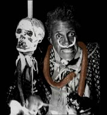

Сначала "На тебе мое заклятье" я записал для "Гранд Рекордз". "Вопящий" Джей Хокинс. |
 Полвека фигляр ложился в горящий гроб.Кремирован недавно. Собственно, полвека - преувеличение. Он впервые открыл свой концерт пением из пылающего гроба в 1957 году - а это не совсем полвека... Но невзначай округлить - это очень в духе самого Хокинса. Его творческий метод: максимальный эффект достигается только преувеличением всего данного. Про песню, о которой придется говорить на протяжении всей его биографии, он пояснял: "Когда мы ее выпустили, многие подходили ко мне, чтобы спросить, правда ли, как они слышали, что я был пьян на записи. Ну правда. Только надо помнить, что там еще и музыканты были - и каждый тоже пьян в стельку! И представитель "Коламбии" был пьян! И звукорежиссер, делавший запись и сведение, тоже был пьян!" Якобы так родился один самых удивительных хитов рок-н-ролльной эпохи: "I PUT A SPELL ON YOU" - "На тебе мое заклятье". По иронии судьбы, самому автору она принесла известность невеликую, только скандальную; зато потом " Непугливая дама - коммерческая удача. Но "Скриминг" Джея Хокинса она старательно обходила стороной. А тем временем его записи, с непременной приправой непристойных звуков, воя и урчания, и клацанья зубами; его концерты, с пылающими гробами, резиновыми змеями и черепом по имени Генри (на палке, с сигаретой в безгубых зубах) - сделали его имя символом первого прорыва на большую эстраду окончательной исполнительской экзальтации помноженной на китч ранних фильмов ужасов. Кстати, его кинематографичность сделала Хокинса желанным эпизодическим персонажем в кинофильмах, так или иначе старавшихся поддразнить зрителя: от коммерческих, вроде комедии "Девушке не удержаться" или музыкального ревю "Мистер рок-н-ролл", до независимых, из которых самый известный с его участием - "Таинственный поезд" Джима Джармуша. Он выступал в турне разбитных "Роллинг Стоунз", и давал сольные концерты в слегка снобистской парижской "Олимпии". Он повидал весь мир по ту строну железного занавеса, но жил не по его законам; он боролся и с реальными звукозаписывающими компаниями, и с собственной тенью клоуна из цирка ужасов; он так и не исполнил своей самой давней и заветной мечты, оправдавшей бы его претензии быть серьезным певцом: спеть в "настоящей опере". Его резала влюбленная певица, он развелся с шестью женами, а вне супружеской спальни наплодил 57 детей, как минимум. Он жил на юге США и на Аляске, в Японии и в Европе, на Филиппинах и на Гавайях… Он умер, как поэт, в Париже… Но умер, как лавочник: от закупорки. Его прах смешался с золой реального, а не реквизитного гроба. Он успокоился, наконец? - некст |